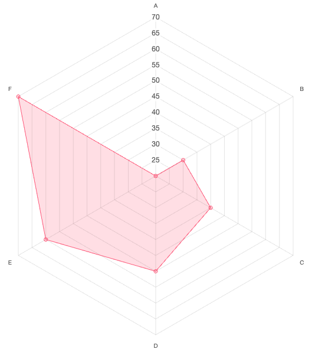
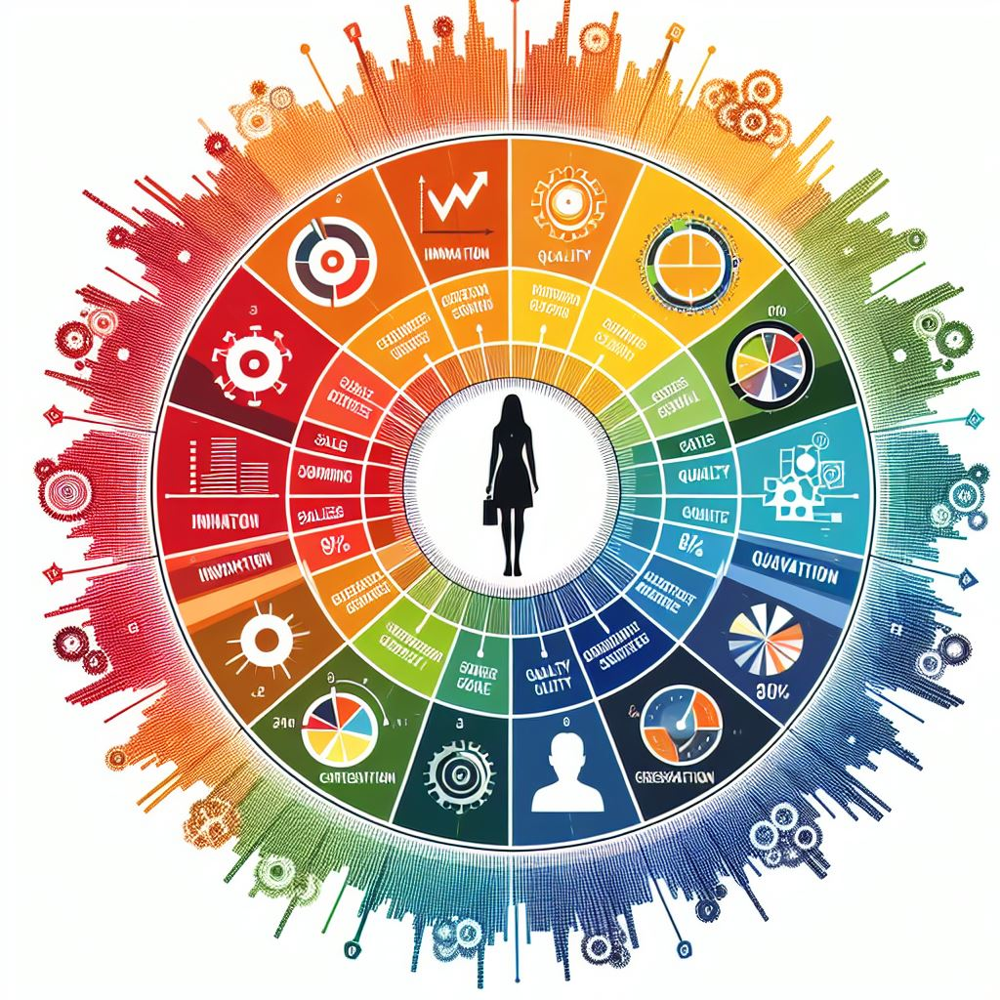

Learning journey
學習分享
 comments powered by Disqus
comments powered by Disqus
掌握數據之美 與AI一起化身數據畫家
揭開數據視覺化魔法的神祕面紗
✔ 你也是想用數據說出好故事嗎？
✔ 你也是想發揮資料視覺化工具的強大嗎？
- 快來試試與AI攜手，創作屬於你的數據藝術吧！
在這個大數據時代，數據的產生和收集已無所不在，這些數據不僅在商業世界中扮演著關鍵角色，更在個人和社會層面產生深遠的影響。掌握數據之美意味著不僅要善用數據，還需要懂得利用數據來講述有意義的故事，並意識到數據對我們個人和社會的影響。儘管數據本身可能是枯燥的，但它蘊藏著豐富的信息，如何在這龐大的數據中提取有用的信息，數據清洗與整理將會是關鍵步驟，而AI在此時將會是我們的好幫手。
當我們獲得了更準確可信的數據後，圖表製作成為故事傳達的關鍵一環，而現今，AI如ChatGPT與Excel、Tableau、Flourish等數據可視化工具的結合，讓我們更能夠表現數據之美、讓數據化身為一幅幅令人驚嘆的畫作，如何使用AI下Prompt與這些工具來製作圖表，網路上也有許多教學，或是可以嘗試用網頁程式碼做圖表，例如對著生成式AI說這句咒語：
請幫我按造以下數據生成一個專業的網頁互動雷達圖程式碼，並將HTML、CSS、Javascript 拆開來：

一張雷達圖就誕生了，當想調整圖表時只需調整程式碼即可。 又或者是想製作資訊圖表卻苦無靈感時，或許也可以請AI提供建議，例如：

一個靈感來源就誕生了，相信有了靈感來源，好的作品創意一定也會源源不絕，雖然圖表的本質在於清晰地傳達資訊，但若能在傳達數據背後故事的同時呈現美麗的圖像，是不是更賞心悅目了呢？讓我們一起掌握數據之美，與AI共同化身為數據畫家，描繪出屬於數據的獨特色彩與魅力吧！
數據視覺化書籍推薦
📗 矽谷簡報女王用數據說出好故事 ☞ 學習如何定義數據觀點與內化故事情節。
📗 大數據時代超吸睛視覺化工具與技術：Excel+Tableau ☞ 學習資料視覺化、資料清洗，打造吸睛圖表。
AI視覺化協作演講推薦
☞ 學習AI協作的思路，運用ChatGPT進行資料分析與視覺化。